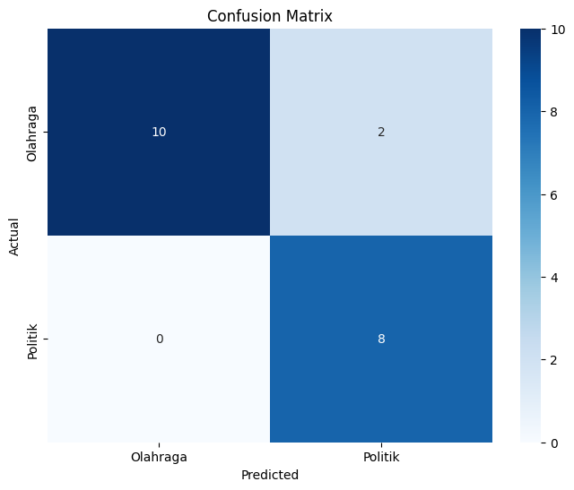
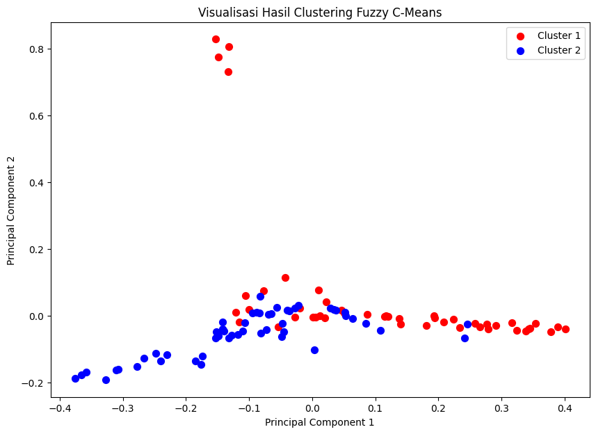

Tugas 2#
Rafly Faldiansyah Putra
210411100063
Preprocessing hasil crawling data dari kompas.com
import requests
from bs4 import BeautifulSoup
import pandas as pd
import time
import random
# Daftar user agents yang akan dirotasi
USER_AGENTS = [
'Mozilla/5.0 (Windows NT 10.0; Win64; x64) AppleWebKit/537.36 (KHTML, like Gecko) Chrome/58.0.3029.110 Safari/537.3',
'Mozilla/5.0 (Macintosh; Intel Mac OS X 10_15_7) AppleWebKit/537.36 (KHTML, like Gecko) Chrome/91.0.4472.124 Safari/537.36',
'Mozilla/5.0 (X11; Ubuntu; Linux x86_64; rv:89.0) Gecko/20100101 Firefox/89.0',
]
# Fungsi untuk mengambil dan mem-parsing HTML dari URL
def get_soup(url):
headers = {
'User-Agent': random.choice(USER_AGENTS)
}
try:
response = requests.get(url, headers=headers)
if response.status_code == 200:
return BeautifulSoup(response.text, 'html.parser')
else:
print(f"Error {response.status_code} saat mengambil {url}")
return None
except Exception as e:
print(f"Error: {e}")
return None
def get_article_details(detail_url, category_name):
detail_soup = get_soup(detail_url)
if detail_soup:
# Ambil konten dari div dengan class 'read__content'
content_div = detail_soup.find('div', class_='read__content')
content = ' '.join([p.text for p in content_div.find_all('p')]) if content_div else 'Tidak ada isi berita'
# Coba ambil tanggal dari div dengan class 'videoKG-date' terlebih dahulu
date_tag = detail_soup.find('div', class_='videoKG-date')
if not date_tag:
# Jika tidak ditemukan, ambil dari div dengan class 'read__time'
date_tag = detail_soup.find('div', class_='read__time')
date = date_tag.text.strip().split('-')[-1].strip() if date_tag else 'Tidak ada tanggal'
# Ambil judul artikel
title_tag = detail_soup.find('h1')
title = title_tag.text.strip() if title_tag else 'Tidak ada judul'
return {
'judul': title,
'isi_berita': content,
'tanggal': date,
'kategori': category_name,
}
return None
# Fungsi untuk mendapatkan artikel dari suatu kategori
def get_articles(category_url, category_name, max_articles):
articles = []
page = 1
while len(articles) < max_articles:
url = f'{category_url}?page={page}'
print(f"Mengambil: {url}")
soup = get_soup(url)
if soup is None:
break
article_list = soup.find_all('h3', class_='article__title')
if not article_list:
print(f"Tidak ada artikel ditemukan di halaman {page}.")
break
for article in article_list:
if len(articles) >= max_articles:
break
title_tag = article.find('a')
detail_url = title_tag['href'] if title_tag else None
if detail_url:
article_details = get_article_details(detail_url, category_name)
if article_details:
articles.append(article_details)
sleep_time = random.uniform(3, 6)
# print(f"Menunggu selama {sleep_time:.2f} detik sebelum mengambil halaman berikutnya...")
time.sleep(sleep_time)
page += 1
return articles
# URL Kategori Kompas
categories = {
'Olahraga': 'https://www.kompas.com/tag/olahraga',
'Politik': 'https://www.kompas.com/tag/politik',
}
max_articles=50
# Mengumpulkan semua data
all_articles = []
for category_name, category_url in categories.items():
print(f"Menambang kategori {category_name}...")
articles = get_articles(category_url, category_name, max_articles)
all_articles.extend(articles)
# Simpan ke dalam DataFrame
df = pd.DataFrame(all_articles)
# Simpan ke dalam file CSV tanpa kolom 'url'
df.to_csv('kompas_articles.csv', index=False)
# Tampilkan 10 data pertama dalam bentuk tabel
print(df.head(10))
print("Proses penambangan data selesai, data tersimpan dalam 'kompas_articles.csv' dan 10 data pertama ditampilkan.")
Menambang kategori Olahraga...
Mengambil: https://www.kompas.com/tag/olahraga?page=1
Mengambil: https://www.kompas.com/tag/olahraga?page=2
Mengambil: https://www.kompas.com/tag/olahraga?page=3
---------------------------------------------------------------------------
KeyboardInterrupt Traceback (most recent call last)
<ipython-input-1-db68ba0a6ff9> in <cell line: 99>()
99 for category_name, category_url in categories.items():
100 print(f"Menambang kategori {category_name}...")
--> 101 articles = get_articles(category_url, category_name, max_articles)
102 all_articles.extend(articles)
103
<ipython-input-1-db68ba0a6ff9> in get_articles(category_url, category_name, max_articles)
82 sleep_time = random.uniform(3, 6)
83 # print(f"Menunggu selama {sleep_time:.2f} detik sebelum mengambil halaman berikutnya...")
---> 84 time.sleep(sleep_time)
85
86 page += 1
KeyboardInterrupt:
df=pd.read_csv("kompas_articles.csv")
df.head(1000)
| judul | isi_berita | tanggal | kategori | |
|---|---|---|---|---|
| 0 | Melatih Disiplin, Soraya Larasati Biasakan Ana... | JAKARTA, KOMPAS.com - Aktris Soraya Larasati t... | 23/11/2024, 20:07 WIB | Olahraga |
| 1 | Jangan Abaikan, Asupan Gizi Penting untuk Menu... | JAKARTA, KOMPAS.com - Olahraga sudah menjadi b... | 23/11/2024, 18:03 WIB | Olahraga |
| 2 | Soraya Larasati Sempat Kesulitan Memilih Pakai... | JAKARTA, KOMPAS.com - Memulai olahraga memang ... | 23/11/2024, 14:15 WIB | Olahraga |
| 3 | Tangani Tawuran, Paslon Pilkada Kota Medan Aja... | MEDAN, KOMPAS.com - Tiga pasangan calon (paslo... | 23/11/2024, 09:16 WIB | Olahraga |
| 4 | Soraya Larasati Lebih Senang Olahraga di Pagi ... | JAKARTA, KOMPAS.com - Aktris dan juga Model So... | 23/11/2024, 09:05 WIB | Olahraga |
| ... | ... | ... | ... | ... |
| 95 | Seberapa Jauh Donald Trump Bisa Melangkah seca... | “(KEMENANGAN) ini akan dikenang selamanya seba... | 11/11/2024, 15:17 WIB | Politik |
| 96 | Mengenal Serena Francis, Calon Kepala Daerah T... | KUPANG, KOMPAS.com - Serena Cosgrova Francis, ... | 11/11/2024, 08:18 WIB | Politik |
| 97 | Kampanye Akbar Bobby-Surya Wujudkan Politik Ri... | KOMPAS.com — Pasangan Calon Gubernur (Cagub) d... | 10/11/2024, 10:12 WIB | Politik |
| 98 | Politik di Era Digital: Antara Tegasnya Prabow... | DI TENGAH ketegasan yang kerap melekat pada so... | 10/11/2024, 09:47 WIB | Politik |
| 99 | Posisi Kepala Otoritas Kesehatan Pemerintahan ... | NEW YORK CITY, KOMPAS.com - Robert F Kennedy J... | 09/11/2024, 17:00 WIB | Politik |
100 rows × 4 columns
df = pd.read_csv("kompas_articles.csv")
df.head()
| judul | isi_berita | tanggal | kategori | |
|---|---|---|---|---|
| 0 | Melatih Disiplin, Soraya Larasati Biasakan Ana... | JAKARTA, KOMPAS.com - Aktris Soraya Larasati t... | 23/11/2024, 20:07 WIB | Olahraga |
| 1 | Jangan Abaikan, Asupan Gizi Penting untuk Menu... | JAKARTA, KOMPAS.com - Olahraga sudah menjadi b... | 23/11/2024, 18:03 WIB | Olahraga |
| 2 | Soraya Larasati Sempat Kesulitan Memilih Pakai... | JAKARTA, KOMPAS.com - Memulai olahraga memang ... | 23/11/2024, 14:15 WIB | Olahraga |
| 3 | Tangani Tawuran, Paslon Pilkada Kota Medan Aja... | MEDAN, KOMPAS.com - Tiga pasangan calon (paslo... | 23/11/2024, 09:16 WIB | Olahraga |
| 4 | Soraya Larasati Lebih Senang Olahraga di Pagi ... | JAKARTA, KOMPAS.com - Aktris dan juga Model So... | 23/11/2024, 09:05 WIB | Olahraga |
Preprocessing#
Preprocessing adalah proses membersihkan dan mempersiapkan data mentah agar siap digunakan oleh model machine learning. Ini meliputi penanganan data yang hilang, normalisasi, mengubah data kategori menjadi angka, dan membersihkan teks. Tujuannya agar data lebih mudah dipahami dan diolah oleh model untuk hasil yang lebih akurat, Berikut adalah beberapa langkah umum dalam pre-processing teks:
Cleansing#
Proses cleansing data adalah tahap pembersihan teks dari elemen-elemen yang tidak relevan terhadap hasil klasifikasi sentimen. Beberapa komponen yang tidak berpengaruh terhadap sentimen, seperti URL, tag HTML, emoji, simbol, angka, dan tanda baca (~!@#$%^&*{}<>:|), dihapus dari dokumen ulasan. Elemen-elemen tersebut dihilangkan untuk mengurangi kebisingan (noise) dalam data. Setelah dihapus, elemen ini digantikan dengan spasi agar struktur kalimat tetap terjaga. Dengan demikian, data menjadi lebih fokus pada kata-kata yang relevan untuk menentukan sentimen, sehingga membantu meningkatkan akurasi model prediksi sentimen.
import re
import pandas as pd
import nltk
import string
def remove_url(text):
# Fungsi untuk menghapus URL dari teks.
if isinstance(text, str): # Memastikan text adalah string
url = re.compile(r'https?://\S+|www\.\S+')
return url.sub(r'', text)
return text # Kembali jika bukan string
def remove_html(text):
# Fungsi untuk menghapus tag HTML dari teks.
if isinstance(text, str): # Memastikan text adalah string
html = re.compile(r'<.*?>')
return html.sub(r'', text)
return text # Kembali jika bukan string
def remove_emoji(text):
# Fungsi untuk menghapus emoji dari teks.
if isinstance(text, str): # Memastikan text adalah string
emoji_pattern = re.compile("["
u"\U0001F600-\U0001F64F" # emotikon wajah
u"\U0001F300-\U0001F5FF" # simbol & gambar
u"\U0001F680-\U0001F6FF" # transportasi & simbol
u"\U0001F1E0-\U0001F1FF" # bendera negara
"]+", flags=re.UNICODE)
return emoji_pattern.sub(r'', text)
return text # Kembali jika bukan string
def remove_numbers(text):
# Fungsi untuk menghapus angka dari teks.
if isinstance(text, str): # Memastikan text adalah string
return re.sub(r'\d+', '', text)
return text # Kembali jika bukan string
def remove_symbols(text):
# Fungsi untuk menghapus simbol dan karakter khusus dari teks.
if isinstance(text, str): # Memastikan text adalah string
return re.sub(r'[^a-zA-Z0-9\s]', '', text)
return text # Kembali jika bukan string
# Asumsikan df adalah DataFrame yang berisi data CNN (judul, berita, tanggal, kategori)
# Contoh: df = pd.read_csv('berita-cnn.csv')
# Terapkan fungsi cleansing untuk kolom 'berita'
df['berita_clean'] = df['isi_berita'].apply(remove_url)
df['berita_clean'] = df['berita_clean'].apply(remove_html)
df['berita_clean'] = df['berita_clean'].apply(remove_emoji)
df['berita_clean'] = df['berita_clean'].apply(remove_symbols)
df['berita_clean'] = df['berita_clean'].apply(remove_numbers)
# Tampilkan beberapa baris dari hasil yang sudah dibersihkan
df.head(5)
| judul | isi_berita | tanggal | kategori | berita_clean | |
|---|---|---|---|---|---|
| 0 | Melatih Disiplin, Soraya Larasati Biasakan Ana... | JAKARTA, KOMPAS.com - Aktris Soraya Larasati t... | 23/11/2024, 20:07 WIB | Olahraga | JAKARTA KOMPAScom Aktris Soraya Larasati tela... |
| 1 | Jangan Abaikan, Asupan Gizi Penting untuk Menu... | JAKARTA, KOMPAS.com - Olahraga sudah menjadi b... | 23/11/2024, 18:03 WIB | Olahraga | JAKARTA KOMPAScom Olahraga sudah menjadi bagi... |
| 2 | Soraya Larasati Sempat Kesulitan Memilih Pakai... | JAKARTA, KOMPAS.com - Memulai olahraga memang ... | 23/11/2024, 14:15 WIB | Olahraga | JAKARTA KOMPAScom Memulai olahraga memang ker... |
| 3 | Tangani Tawuran, Paslon Pilkada Kota Medan Aja... | MEDAN, KOMPAS.com - Tiga pasangan calon (paslo... | 23/11/2024, 09:16 WIB | Olahraga | MEDAN KOMPAScom Tiga pasangan calon paslon wa... |
| 4 | Soraya Larasati Lebih Senang Olahraga di Pagi ... | JAKARTA, KOMPAS.com - Aktris dan juga Model So... | 23/11/2024, 09:05 WIB | Olahraga | JAKARTA KOMPAScom Aktris dan juga Model Soray... |
CASE FOLDING#
Pada tahap case folding, semua huruf kapital dalam dokumen ulasan diubah menjadi huruf kecil, atau disebut lowercase. Tujuan dari langkah ini adalah untuk menghilangkan redundansi data yang hanya disebabkan oleh perbedaan kapitalisasi. Misalnya, kata “Ekonomi” dan “ekonomi” secara teknis sama dalam analisis teks, namun tanpa case folding, komputer akan menganggapnya berbeda. Dengan mengonversi seluruh teks menjadi huruf kecil, semua variasi penulisan diseragamkan, sehingga mencegah duplikasi penghitungan atau kesalahan dalam interpretasi data.
def case_folding(text):
if isinstance(text, str):
lowercase_text = text.lower()
return lowercase_text
else :
return text
df ['case_folding'] = df['berita_clean'].apply(case_folding)
df.head(5)
| judul | isi_berita | tanggal | kategori | berita_clean | case_folding | |
|---|---|---|---|---|---|---|
| 0 | Melatih Disiplin, Soraya Larasati Biasakan Ana... | JAKARTA, KOMPAS.com - Aktris Soraya Larasati t... | 23/11/2024, 20:07 WIB | Olahraga | JAKARTA KOMPAScom Aktris Soraya Larasati tela... | jakarta kompascom aktris soraya larasati tela... |
| 1 | Jangan Abaikan, Asupan Gizi Penting untuk Menu... | JAKARTA, KOMPAS.com - Olahraga sudah menjadi b... | 23/11/2024, 18:03 WIB | Olahraga | JAKARTA KOMPAScom Olahraga sudah menjadi bagi... | jakarta kompascom olahraga sudah menjadi bagi... |
| 2 | Soraya Larasati Sempat Kesulitan Memilih Pakai... | JAKARTA, KOMPAS.com - Memulai olahraga memang ... | 23/11/2024, 14:15 WIB | Olahraga | JAKARTA KOMPAScom Memulai olahraga memang ker... | jakarta kompascom memulai olahraga memang ker... |
| 3 | Tangani Tawuran, Paslon Pilkada Kota Medan Aja... | MEDAN, KOMPAS.com - Tiga pasangan calon (paslo... | 23/11/2024, 09:16 WIB | Olahraga | MEDAN KOMPAScom Tiga pasangan calon paslon wa... | medan kompascom tiga pasangan calon paslon wa... |
| 4 | Soraya Larasati Lebih Senang Olahraga di Pagi ... | JAKARTA, KOMPAS.com - Aktris dan juga Model So... | 23/11/2024, 09:05 WIB | Olahraga | JAKARTA KOMPAScom Aktris dan juga Model Soray... | jakarta kompascom aktris dan juga model soray... |
TOKENIZATION#
Tokenization adalah tahap di mana setiap kata dalam sebuah dokumen dipecah menjadi unit-unit kata yang lebih kecil, atau disebut token. Proses ini memisahkan kata-kata berdasarkan spasi, sehingga setiap kata yang terpisah oleh spasi dianggap sebagai token tersendiri. Sebagai contoh, kalimat “Upaya agar ekonomi stabil” akan diuraikan menjadi token [“Upaya”, “agar”, “ekonomi”, “stabil”].
def tokenize(text):
# Memeriksa apakah input adalah string
if isinstance(text, str):
tokens = text.split()
return tokens
else:
return [] # Mengembalikan list kosong untuk input non-string
df['tokenize'] = df['case_folding'].apply(tokenize)
df.head(5)
| judul | isi_berita | tanggal | kategori | berita_clean | case_folding | tokenize | |
|---|---|---|---|---|---|---|---|
| 0 | Melatih Disiplin, Soraya Larasati Biasakan Ana... | JAKARTA, KOMPAS.com - Aktris Soraya Larasati t... | 23/11/2024, 20:07 WIB | Olahraga | JAKARTA KOMPAScom Aktris Soraya Larasati tela... | jakarta kompascom aktris soraya larasati tela... | [jakarta, kompascom, aktris, soraya, larasati,... |
| 1 | Jangan Abaikan, Asupan Gizi Penting untuk Menu... | JAKARTA, KOMPAS.com - Olahraga sudah menjadi b... | 23/11/2024, 18:03 WIB | Olahraga | JAKARTA KOMPAScom Olahraga sudah menjadi bagi... | jakarta kompascom olahraga sudah menjadi bagi... | [jakarta, kompascom, olahraga, sudah, menjadi,... |
| 2 | Soraya Larasati Sempat Kesulitan Memilih Pakai... | JAKARTA, KOMPAS.com - Memulai olahraga memang ... | 23/11/2024, 14:15 WIB | Olahraga | JAKARTA KOMPAScom Memulai olahraga memang ker... | jakarta kompascom memulai olahraga memang ker... | [jakarta, kompascom, memulai, olahraga, memang... |
| 3 | Tangani Tawuran, Paslon Pilkada Kota Medan Aja... | MEDAN, KOMPAS.com - Tiga pasangan calon (paslo... | 23/11/2024, 09:16 WIB | Olahraga | MEDAN KOMPAScom Tiga pasangan calon paslon wa... | medan kompascom tiga pasangan calon paslon wa... | [medan, kompascom, tiga, pasangan, calon, pasl... |
| 4 | Soraya Larasati Lebih Senang Olahraga di Pagi ... | JAKARTA, KOMPAS.com - Aktris dan juga Model So... | 23/11/2024, 09:05 WIB | Olahraga | JAKARTA KOMPAScom Aktris dan juga Model Soray... | jakarta kompascom aktris dan juga model soray... | [jakarta, kompascom, aktris, dan, juga, model,... |
STOPWORD REMOVAL#
Stopword removal adalah proses menghapus kata-kata yang dianggap tidak penting atau tidak memiliki makna signifikan dalam analisis teks, seperti “dan,” “di,” “yang,” atau “itu.” Kata-kata ini sering muncul dalam kalimat tetapi tidak memberikan informasi penting untuk pemrosesan atau analisis lebih lanjut. Dengan menghapus stopwords, data teks menjadi lebih ringkas dan fokus hanya pada kata-kata yang memiliki bobot lebih besar dalam analisis, seperti saat melakukan klasifikasi atau pemodelan teks.
from nltk.corpus import stopwords
nltk.download('stopwords')
stop_words = stopwords.words('indonesian')
[nltk_data] Downloading package stopwords to
[nltk_data] C:\Users\Rafly\AppData\Roaming\nltk_data...
[nltk_data] Package stopwords is already up-to-date!
def remove_stopwords(text):
return [word for word in text if word not in stop_words]
df['stopword_removal'] = df['tokenize'].apply(lambda x: ' '.join(remove_stopwords(x)))
df.to_csv("preprocessing-kompas.csv", encoding='utf8', index=False)
df.head(5)
| judul | isi_berita | tanggal | kategori | berita_clean | case_folding | tokenize | stopword_removal | |
|---|---|---|---|---|---|---|---|---|
| 0 | Melatih Disiplin, Soraya Larasati Biasakan Ana... | JAKARTA, KOMPAS.com - Aktris Soraya Larasati t... | 23/11/2024, 20:07 WIB | Olahraga | JAKARTA KOMPAScom Aktris Soraya Larasati tela... | jakarta kompascom aktris soraya larasati tela... | [jakarta, kompascom, aktris, soraya, larasati,... | jakarta kompascom aktris soraya larasati konsi... |
| 1 | Jangan Abaikan, Asupan Gizi Penting untuk Menu... | JAKARTA, KOMPAS.com - Olahraga sudah menjadi b... | 23/11/2024, 18:03 WIB | Olahraga | JAKARTA KOMPAScom Olahraga sudah menjadi bagi... | jakarta kompascom olahraga sudah menjadi bagi... | [jakarta, kompascom, olahraga, sudah, menjadi,... | jakarta kompascom olahraga gaya hidup masyarak... |
| 2 | Soraya Larasati Sempat Kesulitan Memilih Pakai... | JAKARTA, KOMPAS.com - Memulai olahraga memang ... | 23/11/2024, 14:15 WIB | Olahraga | JAKARTA KOMPAScom Memulai olahraga memang ker... | jakarta kompascom memulai olahraga memang ker... | [jakarta, kompascom, memulai, olahraga, memang... | jakarta kompascom olahraga kerap kali sulit or... |
| 3 | Tangani Tawuran, Paslon Pilkada Kota Medan Aja... | MEDAN, KOMPAS.com - Tiga pasangan calon (paslo... | 23/11/2024, 09:16 WIB | Olahraga | MEDAN KOMPAScom Tiga pasangan calon paslon wa... | medan kompascom tiga pasangan calon paslon wa... | [medan, kompascom, tiga, pasangan, calon, pasl... | medan kompascom pasangan calon paslon wali kot... |
| 4 | Soraya Larasati Lebih Senang Olahraga di Pagi ... | JAKARTA, KOMPAS.com - Aktris dan juga Model So... | 23/11/2024, 09:05 WIB | Olahraga | JAKARTA KOMPAScom Aktris dan juga Model Soray... | jakarta kompascom aktris dan juga model soray... | [jakarta, kompascom, aktris, dan, juga, model,... | jakarta kompascom aktris model soraya larasati... |
TF-IDF (Term Frequency-Inverse Document Frequency)#
TF-IDF adalah metode statistik yang digunakan untuk mengevaluasi pentingnya suatu kata dalam sebuah dokumen relatif terhadap koleksi dokumen lainnya. TF-IDF sering digunakan dalam tugas seperti penggalian teks, penambangan informasi, dan pemodelan pembelajaran mesin berbasis teks. Term Frequency (TF), yang menghitung seberapa sering sebuah kata muncul dalam dokumen, dan Inverse Document Frequency (IDF), yang menilai seberapa jarang kata tersebut muncul di seluruh dokumen dalam koleksi.
TF-IDF bekerja dengan memberikan bobot lebih tinggi pada kata-kata yang sering muncul dalam sebuah dokumen, tetapi jarang muncul di dokumen lain, sehingga membantu mengidentifikasi kata-kata yang paling relevan.
import pandas as pd
from sklearn.feature_extraction.text import TfidfVectorizer
df = pd.read_csv("preprocessing-kompas.csv")
# Mengganti NaN dengan string kosong
df['stopword_removal'] = df['stopword_removal'].fillna('')
# Menginisialisasi TfidfVectorizer
vectorizer = TfidfVectorizer()
# Menghitung TF-IDF
tfidf_matrix = vectorizer.fit_transform(df['stopword_removal'])
# Mengubah hasilnya menjadi DataFrame
tfidf_df = pd.DataFrame(tfidf_matrix.toarray(), columns=vectorizer.get_feature_names_out())
tfidf_df.head(10)
| abcnetau | abdi | abdul | abi | academy | acara | acaraacara | ace | aceh | acep | ... | zac | zaenuddin | zakiyuddin | zaman | zamannya | zamrud | zat | zulhas | zulkieflimansyahsuhaili | zulkifli | |
|---|---|---|---|---|---|---|---|---|---|---|---|---|---|---|---|---|---|---|---|---|---|
| 0 | 0.0 | 0.0 | 0.000000 | 0.0 | 0.0 | 0.0 | 0.0 | 0.0 | 0.0 | 0.0 | ... | 0.0 | 0.0 | 0.000000 | 0.0 | 0.0 | 0.0 | 0.0 | 0.0 | 0.0 | 0.0 |
| 1 | 0.0 | 0.0 | 0.000000 | 0.0 | 0.0 | 0.0 | 0.0 | 0.0 | 0.0 | 0.0 | ... | 0.0 | 0.0 | 0.000000 | 0.0 | 0.0 | 0.0 | 0.0 | 0.0 | 0.0 | 0.0 |
| 2 | 0.0 | 0.0 | 0.000000 | 0.0 | 0.0 | 0.0 | 0.0 | 0.0 | 0.0 | 0.0 | ... | 0.0 | 0.0 | 0.000000 | 0.0 | 0.0 | 0.0 | 0.0 | 0.0 | 0.0 | 0.0 |
| 3 | 0.0 | 0.0 | 0.058451 | 0.0 | 0.0 | 0.0 | 0.0 | 0.0 | 0.0 | 0.0 | ... | 0.0 | 0.0 | 0.068032 | 0.0 | 0.0 | 0.0 | 0.0 | 0.0 | 0.0 | 0.0 |
| 4 | 0.0 | 0.0 | 0.000000 | 0.0 | 0.0 | 0.0 | 0.0 | 0.0 | 0.0 | 0.0 | ... | 0.0 | 0.0 | 0.000000 | 0.0 | 0.0 | 0.0 | 0.0 | 0.0 | 0.0 | 0.0 |
| 5 | 0.0 | 0.0 | 0.000000 | 0.0 | 0.0 | 0.0 | 0.0 | 0.0 | 0.0 | 0.0 | ... | 0.0 | 0.0 | 0.000000 | 0.0 | 0.0 | 0.0 | 0.0 | 0.0 | 0.0 | 0.0 |
| 6 | 0.0 | 0.0 | 0.000000 | 0.0 | 0.0 | 0.0 | 0.0 | 0.0 | 0.0 | 0.0 | ... | 0.0 | 0.0 | 0.000000 | 0.0 | 0.0 | 0.0 | 0.0 | 0.0 | 0.0 | 0.0 |
| 7 | 0.0 | 0.0 | 0.000000 | 0.0 | 0.0 | 0.0 | 0.0 | 0.0 | 0.0 | 0.0 | ... | 0.0 | 0.0 | 0.000000 | 0.0 | 0.0 | 0.0 | 0.0 | 0.0 | 0.0 | 0.0 |
| 8 | 0.0 | 0.0 | 0.000000 | 0.0 | 0.0 | 0.0 | 0.0 | 0.0 | 0.0 | 0.0 | ... | 0.0 | 0.0 | 0.000000 | 0.0 | 0.0 | 0.0 | 0.0 | 0.0 | 0.0 | 0.0 |
| 9 | 0.0 | 0.0 | 0.000000 | 0.0 | 0.0 | 0.0 | 0.0 | 0.0 | 0.0 | 0.0 | ... | 0.0 | 0.0 | 0.000000 | 0.0 | 0.0 | 0.0 | 0.0 | 0.0 | 0.0 | 0.0 |
10 rows × 4917 columns
import pandas as pd
from sklearn.feature_extraction.text import TfidfVectorizer
# Membaca dataset
df = pd.read_csv("preprocessing-kompas.csv")
# Mengganti NaN dengan string kosong
df['stopword_removal'] = df['stopword_removal'].fillna('')
# Menginisialisasi TfidfVectorizer dengan normalisasi L2
vectorizer = TfidfVectorizer(norm='l2')
# Menghitung TF-IDF
tfidf_matrix = vectorizer.fit_transform(df['stopword_removal'])
# Mengubah hasilnya menjadi DataFrame
tfidf_df = pd.DataFrame(tfidf_matrix.toarray(), columns=vectorizer.get_feature_names_out())
# Menampilkan 10 baris pertama dari DataFrame TF-IDF
tfidf_df.head(1000)
| abcnetau | abdi | abdul | abi | academy | acara | acaraacara | ace | aceh | acep | ... | zac | zaenuddin | zakiyuddin | zaman | zamannya | zamrud | zat | zulhas | zulkieflimansyahsuhaili | zulkifli | |
|---|---|---|---|---|---|---|---|---|---|---|---|---|---|---|---|---|---|---|---|---|---|
| 0 | 0.0 | 0.0 | 0.000000 | 0.0 | 0.000000 | 0.0 | 0.0 | 0.0 | 0.0 | 0.0 | ... | 0.0 | 0.0 | 0.000000 | 0.0 | 0.0 | 0.0 | 0.0 | 0.0 | 0.0 | 0.0 |
| 1 | 0.0 | 0.0 | 0.000000 | 0.0 | 0.000000 | 0.0 | 0.0 | 0.0 | 0.0 | 0.0 | ... | 0.0 | 0.0 | 0.000000 | 0.0 | 0.0 | 0.0 | 0.0 | 0.0 | 0.0 | 0.0 |
| 2 | 0.0 | 0.0 | 0.000000 | 0.0 | 0.000000 | 0.0 | 0.0 | 0.0 | 0.0 | 0.0 | ... | 0.0 | 0.0 | 0.000000 | 0.0 | 0.0 | 0.0 | 0.0 | 0.0 | 0.0 | 0.0 |
| 3 | 0.0 | 0.0 | 0.058451 | 0.0 | 0.000000 | 0.0 | 0.0 | 0.0 | 0.0 | 0.0 | ... | 0.0 | 0.0 | 0.068032 | 0.0 | 0.0 | 0.0 | 0.0 | 0.0 | 0.0 | 0.0 |
| 4 | 0.0 | 0.0 | 0.000000 | 0.0 | 0.000000 | 0.0 | 0.0 | 0.0 | 0.0 | 0.0 | ... | 0.0 | 0.0 | 0.000000 | 0.0 | 0.0 | 0.0 | 0.0 | 0.0 | 0.0 | 0.0 |
| ... | ... | ... | ... | ... | ... | ... | ... | ... | ... | ... | ... | ... | ... | ... | ... | ... | ... | ... | ... | ... | ... |
| 95 | 0.0 | 0.0 | 0.000000 | 0.0 | 0.000000 | 0.0 | 0.0 | 0.0 | 0.0 | 0.0 | ... | 0.0 | 0.0 | 0.000000 | 0.0 | 0.0 | 0.0 | 0.0 | 0.0 | 0.0 | 0.0 |
| 96 | 0.0 | 0.0 | 0.000000 | 0.0 | 0.063166 | 0.0 | 0.0 | 0.0 | 0.0 | 0.0 | ... | 0.0 | 0.0 | 0.000000 | 0.0 | 0.0 | 0.0 | 0.0 | 0.0 | 0.0 | 0.0 |
| 97 | 0.0 | 0.0 | 0.000000 | 0.0 | 0.000000 | 0.0 | 0.0 | 0.0 | 0.0 | 0.0 | ... | 0.0 | 0.0 | 0.000000 | 0.0 | 0.0 | 0.0 | 0.0 | 0.0 | 0.0 | 0.0 |
| 98 | 0.0 | 0.0 | 0.000000 | 0.0 | 0.000000 | 0.0 | 0.0 | 0.0 | 0.0 | 0.0 | ... | 0.0 | 0.0 | 0.000000 | 0.0 | 0.0 | 0.0 | 0.0 | 0.0 | 0.0 | 0.0 |
| 99 | 0.0 | 0.0 | 0.000000 | 0.0 | 0.000000 | 0.0 | 0.0 | 0.0 | 0.0 | 0.0 | ... | 0.0 | 0.0 | 0.000000 | 0.0 | 0.0 | 0.0 | 0.0 | 0.0 | 0.0 | 0.0 |
100 rows × 4917 columns
Regresi Logistik#
Untuk memprediksi kesesuaian isi berita dengan kategori berita
from sklearn.model_selection import train_test_split
from sklearn.linear_model import LogisticRegression
from sklearn.metrics import classification_report, confusion_matrix
import matplotlib.pyplot as plt
import seaborn as sns
# Menentukan target (y)
y = df['kategori'] # Target adalah kategori berita
# Pisahkan dataset menjadi set pelatihan dan pengujian
X_train, X_test, y_train, y_test = train_test_split(tfidf_df, y, test_size=0.2, random_state=42)
# Inisialisasi model Regresi Logistik
model = LogisticRegression(max_iter=1000)
# Latih model
model.fit(X_train, y_train)
# Lakukan prediksi pada set pengujian
y_pred = model.predict(X_test)
# Evaluasi model
print("Confusion Matrix:")
conf_matrix = confusion_matrix(y_test, y_pred)
print(conf_matrix)
print("\nHasil Klasifikasi:")
class_report = classification_report(y_test, y_pred, zero_division=0)
print(class_report)
# Menampilkan akurasi
accuracy = (y_pred == y_test).mean()
print(f"Akurasi Model: {accuracy:.2f}")
# Visualisasi Confusion Matrix
plt.figure(figsize=(8, 6))
sns.heatmap(conf_matrix, annot=True, fmt='d', cmap='Blues',
xticklabels=model.classes_, yticklabels=model.classes_)
plt.ylabel('Actual')
plt.xlabel('Predicted')
plt.title('Confusion Matrix')
plt.show()
Confusion Matrix:
[[10 2]
[ 0 8]]
Hasil Klasifikasi:
precision recall f1-score support
Olahraga 1.00 0.83 0.91 12
Politik 0.80 1.00 0.89 8
accuracy 0.90 20
macro avg 0.90 0.92 0.90 20
weighted avg 0.92 0.90 0.90 20
Akurasi Model: 0.90

Link App Klasifikasi kategori Berita :#
https://huggingface.co/spaces/Raflyyy/regresi-logistik#
Reduksi Dimensi Transformasi SVD#
import pandas as pd
from sklearn.feature_extraction.text import TfidfVectorizer
from sklearn.decomposition import TruncatedSVD
from sklearn.metrics.pairwise import cosine_similarity
import re
from IPython.display import display, Markdown
# 1. Membaca Dataset
# Membaca file CSV yang berisi dataset
df = pd.read_csv("preprocessing-kompas.csv")
# Mengganti nilai NaN dengan string kosong agar tidak ada data kosong yang menyebabkan error
df['stopword_removal'] = df['stopword_removal'].fillna('')
# 2. Mengonversi Data Teks ke TF-IDF
# Menginisialisasi TfidfVectorizer dengan normalisasi L2
vectorizer = TfidfVectorizer(norm='l2')
# Menghitung nilai TF-IDF untuk setiap dokumen
tfidf_matrix = vectorizer.fit_transform(df['stopword_removal'])
# Mengubah hasil TF-IDF menjadi DataFrame untuk kemudahan akses
tfidf_df = pd.DataFrame(tfidf_matrix.toarray(), columns=vectorizer.get_feature_names_out())
# 3. Reduksi Dimensi dengan Truncated SVD
# Menginisialisasi TruncatedSVD untuk mereduksi dimensi menjadi 100 komponen (atau sesuai kebutuhan)
svd = TruncatedSVD(n_components=1000, random_state=42)
# Mengaplikasikan SVD pada matriks TF-IDF untuk menghasilkan matriks dengan dimensi yang lebih rendah
svd_matrix = svd.fit_transform(tfidf_matrix)
# Menyimpan hasil SVD dalam DataFrame untuk digunakan dalam perhitungan kemiripan
svd_df = pd.DataFrame(svd_matrix)
# Menampilkan 10 baris pertama dari DataFrame hasil SVD
svd_df.head(1000)
| 0 | 1 | 2 | 3 | 4 | 5 | 6 | 7 | 8 | 9 | ... | 90 | 91 | 92 | 93 | 94 | 95 | 96 | 97 | 98 | 99 | |
|---|---|---|---|---|---|---|---|---|---|---|---|---|---|---|---|---|---|---|---|---|---|
| 0 | 0.318048 | 0.336699 | 0.001047 | 0.008270 | -0.257332 | 0.017326 | 0.159126 | -0.324972 | -0.082744 | 0.175946 | ... | 0.025443 | 0.032022 | 0.003989 | -0.084826 | 0.001480 | 0.006058 | 0.009300 | 0.029638 | 0.005525 | 0.003858 |
| 1 | 0.267889 | 0.265209 | 0.001206 | -0.001144 | -0.145906 | 0.051709 | -0.002118 | -0.098570 | 0.018178 | -0.014501 | ... | -0.071177 | -0.047667 | -0.032383 | 0.038653 | 0.032659 | 0.012287 | -0.018055 | 0.015435 | 0.003373 | 0.001066 |
| 2 | 0.275993 | 0.289724 | 0.009255 | 0.018454 | -0.282478 | 0.025928 | 0.141696 | -0.350281 | -0.059327 | 0.174348 | ... | 0.023016 | 0.017567 | -0.023269 | -0.001327 | 0.025918 | -0.024781 | 0.000734 | 0.035208 | -0.000262 | 0.001894 |
| 3 | 0.184904 | -0.045614 | -0.038867 | 0.105367 | -0.001282 | -0.128633 | 0.080001 | 0.046412 | -0.074667 | -0.001831 | ... | 0.010405 | -0.014090 | -0.002174 | -0.009361 | -0.001838 | -0.003785 | 0.006885 | -0.008148 | -0.002289 | -0.001875 |
| 4 | 0.336624 | 0.377235 | 0.005007 | -0.022246 | -0.212861 | 0.020914 | 0.119120 | -0.363587 | -0.089158 | 0.186927 | ... | -0.040972 | -0.035931 | 0.042560 | 0.074858 | 0.003522 | 0.046988 | -0.006124 | -0.046595 | -0.007314 | 0.000503 |
| ... | ... | ... | ... | ... | ... | ... | ... | ... | ... | ... | ... | ... | ... | ... | ... | ... | ... | ... | ... | ... | ... |
| 95 | 0.135096 | -0.082512 | 0.057765 | -0.012827 | 0.060773 | 0.104402 | -0.004441 | 0.079390 | 0.519378 | 0.481841 | ... | -0.004262 | -0.002475 | -0.001884 | -0.054075 | -0.008057 | -0.005671 | -0.015422 | -0.000973 | 0.020449 | 0.001359 |
| 96 | 0.136410 | -0.027847 | 0.022742 | 0.016475 | -0.004543 | 0.027487 | 0.100443 | 0.050808 | 0.128822 | -0.046311 | ... | -0.022888 | -0.001423 | -0.003475 | -0.012415 | -0.011740 | -0.006815 | 0.001626 | 0.000196 | 0.008629 | -0.003298 |
| 97 | 0.089245 | -0.069275 | -0.004827 | 0.022257 | 0.011292 | -0.018394 | 0.021997 | 0.033593 | 0.044537 | -0.002819 | ... | 0.009351 | -0.002837 | -0.000367 | 0.014356 | 0.008336 | 0.004960 | -0.010100 | 0.001605 | 0.000423 | -0.002849 |
| 98 | 0.127469 | -0.039437 | 0.019895 | -0.025436 | 0.002352 | 0.022569 | -0.000966 | 0.033656 | 0.097731 | 0.022922 | ... | -0.039153 | -0.026095 | 0.048038 | 0.021043 | -0.016784 | 0.014634 | 0.006370 | 0.006212 | 0.004308 | -0.006296 |
| 99 | 0.115005 | -0.043355 | 0.112110 | 0.005111 | 0.057203 | 0.073302 | 0.007060 | 0.084497 | 0.451178 | 0.426411 | ... | 0.014278 | -0.003287 | 0.008872 | 0.048771 | 0.017395 | 0.006296 | 0.011031 | 0.001606 | -0.015067 | -0.003659 |
100 rows × 100 columns
from sklearn.model_selection import train_test_split
from sklearn.linear_model import LogisticRegression
from sklearn.metrics import classification_report, confusion_matrix
import matplotlib.pyplot as plt
import seaborn as sns
# Menentukan target (y)
y = df['kategori'] # Target adalah kategori berita
# Pisahkan dataset menjadi set pelatihan dan pengujian
X_train, X_test, y_train, y_test = train_test_split(svd_df, y, test_size=0.2, random_state=42)
# Inisialisasi model Regresi Logistik
model = LogisticRegression(max_iter=1000)
# Latih model
model.fit(X_train, y_train)
# Lakukan prediksi pada set pengujian
y_pred = model.predict(X_test)
# Evaluasi model
print("Confusion Matrix:")
conf_matrix = confusion_matrix(y_test, y_pred)
print(conf_matrix)
print("\nHasil Klasifikasi:")
class_report = classification_report(y_test, y_pred, zero_division=0)
print(class_report)
# Menampilkan akurasi
accuracy = (y_pred == y_test).mean()
print(f"Akurasi Model: {accuracy:.2f}")
# Visualisasi Confusion Matrix
plt.figure(figsize=(8, 6))
sns.heatmap(conf_matrix, annot=True, fmt='d', cmap='Blues',
xticklabels=model.classes_, yticklabels=model.classes_)
plt.ylabel('Actual')
plt.xlabel('Predicted')
plt.title('Confusion Matrix')
plt.show()
Confusion Matrix:
[[10 2]
[ 0 8]]
Hasil Klasifikasi:
precision recall f1-score support
Olahraga 1.00 0.83 0.91 12
Politik 0.80 1.00 0.89 8
accuracy 0.90 20
macro avg 0.90 0.92 0.90 20
weighted avg 0.92 0.90 0.90 20
Akurasi Model: 0.90
Link App Klasifikasi kategori Berita dengan SVD :#
https://huggingface.co/spaces/Raflyyy/RegresiLogistikSVD#
import pandas as pd
from sklearn.feature_extraction.text import TfidfVectorizer
from sklearn.decomposition import TruncatedSVD
from sklearn.metrics.pairwise import cosine_similarity
import re
import numpy as np
from IPython.display import display, Markdown
import skfuzzy as fuzz
from sklearn.metrics import accuracy_score
from sklearn.preprocessing import LabelEncoder
from IPython.display import display, Markdown
# 1. Membaca Dataset
# Membaca file CSV yang berisi dataset
df = pd.read_csv("preprocessing-kompas.csv")
# Mengganti nilai NaN dengan string kosong agar tidak ada data kosong yang menyebabkan error
df['stopword_removal'] = df['stopword_removal'].fillna('')
# 2. Mengonversi Data Teks ke TF-IDF
# Menginisialisasi TfidfVectorizer dengan normalisasi L2
vectorizer = TfidfVectorizer(norm='l2')
# Menghitung nilai TF-IDF untuk setiap dokumen
tfidf_matrix = vectorizer.fit_transform(df['stopword_removal'])
# Mengubah hasil TF-IDF menjadi DataFrame untuk kemudahan akses
tfidf_df = pd.DataFrame(tfidf_matrix.toarray(), columns=vectorizer.get_feature_names_out())
# 3. Reduksi Dimensi dengan Truncated SVD
# Menginisialisasi TruncatedSVD untuk mereduksi dimensi menjadi 100 komponen (atau sesuai kebutuhan)
svd = TruncatedSVD(n_components=100, random_state=42)
# Mengaplikasikan SVD pada matriks TF-IDF untuk menghasilkan matriks dengan dimensi yang lebih rendah
svd_matrix = svd.fit_transform(tfidf_matrix)
# Menyimpan hasil SVD dalam DataFrame untuk digunakan dalam perhitungan kemiripan
svd_df = pd.DataFrame(svd_matrix)
# Menampilkan 10 baris pertama dari DataFrame hasil SVD
svd_df.head(1000)
| 0 | 1 | 2 | 3 | 4 | 5 | 6 | 7 | 8 | 9 | ... | 90 | 91 | 92 | 93 | 94 | 95 | 96 | 97 | 98 | 99 | |
|---|---|---|---|---|---|---|---|---|---|---|---|---|---|---|---|---|---|---|---|---|---|
| 0 | 0.318048 | 0.336699 | 0.001047 | 0.008270 | -0.257332 | 0.017326 | 0.159126 | -0.324972 | -0.082744 | 0.175946 | ... | 0.025443 | 0.032022 | 0.003989 | -0.084826 | 0.001480 | 0.006058 | 0.009300 | 0.029638 | 0.005525 | 0.003858 |
| 1 | 0.267889 | 0.265209 | 0.001206 | -0.001144 | -0.145906 | 0.051709 | -0.002118 | -0.098570 | 0.018178 | -0.014501 | ... | -0.071177 | -0.047667 | -0.032383 | 0.038653 | 0.032659 | 0.012287 | -0.018055 | 0.015435 | 0.003373 | 0.001066 |
| 2 | 0.275993 | 0.289724 | 0.009255 | 0.018454 | -0.282478 | 0.025928 | 0.141696 | -0.350281 | -0.059327 | 0.174348 | ... | 0.023016 | 0.017567 | -0.023269 | -0.001327 | 0.025918 | -0.024781 | 0.000734 | 0.035208 | -0.000262 | 0.001894 |
| 3 | 0.184904 | -0.045614 | -0.038867 | 0.105367 | -0.001282 | -0.128633 | 0.080001 | 0.046412 | -0.074667 | -0.001831 | ... | 0.010405 | -0.014090 | -0.002174 | -0.009361 | -0.001838 | -0.003785 | 0.006885 | -0.008148 | -0.002289 | -0.001875 |
| 4 | 0.336624 | 0.377235 | 0.005007 | -0.022246 | -0.212861 | 0.020914 | 0.119120 | -0.363587 | -0.089158 | 0.186927 | ... | -0.040972 | -0.035931 | 0.042560 | 0.074858 | 0.003522 | 0.046988 | -0.006124 | -0.046595 | -0.007314 | 0.000503 |
| ... | ... | ... | ... | ... | ... | ... | ... | ... | ... | ... | ... | ... | ... | ... | ... | ... | ... | ... | ... | ... | ... |
| 95 | 0.135096 | -0.082512 | 0.057765 | -0.012827 | 0.060773 | 0.104402 | -0.004441 | 0.079390 | 0.519378 | 0.481841 | ... | -0.004262 | -0.002475 | -0.001884 | -0.054075 | -0.008057 | -0.005671 | -0.015422 | -0.000973 | 0.020449 | 0.001359 |
| 96 | 0.136410 | -0.027847 | 0.022742 | 0.016475 | -0.004543 | 0.027487 | 0.100443 | 0.050808 | 0.128822 | -0.046311 | ... | -0.022888 | -0.001423 | -0.003475 | -0.012415 | -0.011740 | -0.006815 | 0.001626 | 0.000196 | 0.008629 | -0.003298 |
| 97 | 0.089245 | -0.069275 | -0.004827 | 0.022257 | 0.011292 | -0.018394 | 0.021997 | 0.033593 | 0.044537 | -0.002819 | ... | 0.009351 | -0.002837 | -0.000367 | 0.014356 | 0.008336 | 0.004960 | -0.010100 | 0.001605 | 0.000423 | -0.002849 |
| 98 | 0.127469 | -0.039437 | 0.019895 | -0.025436 | 0.002352 | 0.022569 | -0.000966 | 0.033656 | 0.097731 | 0.022922 | ... | -0.039153 | -0.026095 | 0.048038 | 0.021043 | -0.016784 | 0.014634 | 0.006370 | 0.006212 | 0.004308 | -0.006296 |
| 99 | 0.115005 | -0.043355 | 0.112110 | 0.005111 | 0.057203 | 0.073302 | 0.007060 | 0.084497 | 0.451178 | 0.426411 | ... | 0.014278 | -0.003287 | 0.008872 | 0.048771 | 0.017395 | 0.006296 | 0.011031 | 0.001606 | -0.015067 | -0.003659 |
100 rows × 100 columns
import numpy as np
import skfuzzy as fuzz
from sklearn.metrics import accuracy_score
# 4. Menghapus Label Kategori dari Data untuk Clustering
# Misalkan kolom 'kategori' berisi label kategori asli, kita drop kolom tersebut untuk proses clustering
data_features = svd_df.drop(columns=['kategori'], errors='ignore') # Buat pastikan kolom kategori memang ada
# 5. Proses Fuzzy C-Means Clustering
# Menentukan jumlah kluster (misalnya 2 kluster)
n_clusters = 2
# Menjalankan Fuzzy C-Means
cntr, u, u0, d, jm, p, fpc = fuzz.cluster.cmeans(
data_features.T, n_clusters, m=2, error=0.05, maxiter=1000, init=None, seed=42
)
# Menentukan kluster akhir untuk setiap data berdasarkan derajat keanggotaan tertinggi
cluster_labels = np.argmax(u, axis=0)
# 6. Mengukur Akurasi Clustering
# Misalkan kolom 'kategori' menyimpan label asli
if 'kategori' in df.columns:
# Mengonversi label kategori ke bentuk numerik jika belum
df['kategori_numerik'] = pd.factorize(df['kategori'])[0]
# Menghitung akurasi dengan membandingkan hasil clustering dengan label asli
akurasi = accuracy_score(df['kategori_numerik'], cluster_labels)
print(f"Akurasi Clustering Fuzzy C-Means: {akurasi:.2f}")
else:
print("Kolom 'kategori' tidak ditemukan pada dataset; akurasi tidak dapat dihitung.")
Akurasi Clustering Fuzzy C-Means: 0.73
import matplotlib.pyplot as plt
from sklearn.decomposition import PCA
# 7. Menambahkan Kolom Kluster ke DataFrame
# Menyimpan hasil kluster di dalam DataFrame asli untuk memudahkan tampilan
df['cluster'] = cluster_labels
# Menampilkan beberapa dokumen beserta kluster mereka
display(df[['stopword_removal', 'kategori', 'cluster']].head(100))
# 8. Visualisasi Kluster
# Menggunakan PCA untuk mereduksi data ke dalam 2 dimensi agar bisa divisualisasikan
pca = PCA(n_components=2)
pca_result = pca.fit_transform(data_features)
# Mengonversi hasil PCA ke DataFrame untuk kemudahan visualisasi
pca_df = pd.DataFrame(pca_result, columns=['PC1', 'PC2'])
pca_df['cluster'] = cluster_labels
# Plot hasil klustering
plt.figure(figsize=(10, 7))
colors = ['red', 'blue'] # Sesuaikan warna untuk setiap kluster
for cluster in range(n_clusters):
subset = pca_df[pca_df['cluster'] == cluster]
plt.scatter(subset['PC1'], subset['PC2'], s=50, color=colors[cluster], label=f'Cluster {cluster + 1}')
# Menambahkan keterangan dan judul grafik
plt.title("Visualisasi Hasil Clustering Fuzzy C-Means")
plt.xlabel("Principal Component 1")
plt.ylabel("Principal Component 2")
plt.legend()
plt.show()
| stopword_removal | kategori | cluster | |
|---|---|---|---|
| 0 | jakarta kompascom aktris soraya larasati konsi... | Olahraga | 0 |
| 1 | jakarta kompascom olahraga gaya hidup masyarak... | Olahraga | 0 |
| 2 | jakarta kompascom olahraga kerap kali sulit or... | Olahraga | 0 |
| 3 | medan kompascom pasangan calon paslon wali kot... | Olahraga | 1 |
| 4 | jakarta kompascom aktris model soraya larasati... | Olahraga | 0 |
| ... | ... | ... | ... |
| 95 | kemenangan dikenang rakyat amerika kendali neg... | Politik | 1 |
| 96 | kupang kompascom serena cosgrova francis akrab... | Politik | 1 |
| 97 | kompascom pasangan calon gubernur cagub calon ... | Politik | 1 |
| 98 | ketegasan kerap melekat sosok presiden prabowo... | Politik | 1 |
| 99 | new york city kompascom robert f kennedy jr ma... | Politik | 0 |
100 rows × 3 columns
import numpy as np
import skfuzzy as fuzz
from sklearn.metrics import accuracy_score
# 4. Menghapus Label Kategori dari Data untuk Clustering
# Misalkan kolom 'kategori' berisi label kategori asli, kita drop kolom tersebut untuk proses clustering
data_features = tfidf_df.drop(columns=['kategori'], errors='ignore') # Buat pastikan kolom kategori memang ada
# 5. Proses Fuzzy C-Means Clustering
# Menentukan jumlah kluster (misalnya 2 kluster)
n_clusters = 2
# Menjalankan Fuzzy C-Means
cntr, u, u0, d, jm, p, fpc = fuzz.cluster.cmeans(
data_features.T, n_clusters, m=2, error=0.05, maxiter=1000, init=None, seed=42
)
# Menentukan kluster akhir untuk setiap data berdasarkan derajat keanggotaan tertinggi
cluster_labels = np.argmax(u, axis=0)
# 6. Mengukur Akurasi Clustering
# Misalkan kolom 'kategori' menyimpan label asli
if 'kategori' in df.columns:
# Mengonversi label kategori ke bentuk numerik jika belum
df['kategori_numerik'] = pd.factorize(df['kategori'])[0]
# Menghitung akurasi dengan membandingkan hasil clustering dengan label asli
akurasi = accuracy_score(df['kategori_numerik'], cluster_labels)
print(f"Akurasi Clustering Fuzzy C-Means: {akurasi:.2f}")
else:
print("Kolom 'kategori' tidak ditemukan pada dataset; akurasi tidak dapat dihitung.")
Akurasi Clustering Fuzzy C-Means: 0.73
import matplotlib.pyplot as plt
from sklearn.decomposition import PCA
# 7. Menambahkan Kolom Kluster ke DataFrame
# Menyimpan hasil kluster di dalam DataFrame asli untuk memudahkan tampilan
df['cluster'] = cluster_labels
# Menampilkan beberapa dokumen beserta kluster mereka
display(df[['stopword_removal', 'kategori', 'cluster']].head(100))
# 8. Visualisasi Kluster
# Menggunakan PCA untuk mereduksi data ke dalam 2 dimensi agar bisa divisualisasikan
pca = PCA(n_components=2)
pca_result = pca.fit_transform(data_features)
# Mengonversi hasil PCA ke DataFrame untuk kemudahan visualisasi
pca_df = pd.DataFrame(pca_result, columns=['PC1', 'PC2'])
pca_df['cluster'] = cluster_labels
# Plot hasil klustering
plt.figure(figsize=(10, 7))
colors = ['red', 'blue'] # Sesuaikan warna untuk setiap kluster
for cluster in range(n_clusters):
subset = pca_df[pca_df['cluster'] == cluster]
plt.scatter(subset['PC1'], subset['PC2'], s=50, color=colors[cluster], label=f'Cluster {cluster + 1}')
# Menambahkan keterangan dan judul grafik
plt.title("Visualisasi Hasil Clustering Fuzzy C-Means")
plt.xlabel("Principal Component 1")
plt.ylabel("Principal Component 2")
plt.legend()
plt.show()
| stopword_removal | kategori | cluster | |
|---|---|---|---|
| 0 | jakarta kompascom aktris soraya larasati konsi... | Olahraga | 0 |
| 1 | jakarta kompascom olahraga gaya hidup masyarak... | Olahraga | 0 |
| 2 | jakarta kompascom olahraga kerap kali sulit or... | Olahraga | 0 |
| 3 | medan kompascom pasangan calon paslon wali kot... | Olahraga | 1 |
| 4 | jakarta kompascom aktris model soraya larasati... | Olahraga | 0 |
| ... | ... | ... | ... |
| 95 | kemenangan dikenang rakyat amerika kendali neg... | Politik | 1 |
| 96 | kupang kompascom serena cosgrova francis akrab... | Politik | 1 |
| 97 | kompascom pasangan calon gubernur cagub calon ... | Politik | 1 |
| 98 | ketegasan kerap melekat sosok presiden prabowo... | Politik | 1 |
| 99 | new york city kompascom robert f kennedy jr ma... | Politik | 0 |
100 rows × 3 columns
